Gestapelde data structureren - deel 1
Gestapelde data in één kolom transformeren naar tabelvorm.
Gestapelde data zijn gegevens die onder elkaar in één kolom staan:
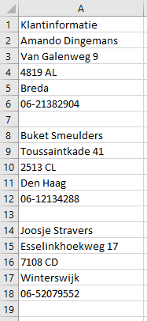
De klantgegevens bestaan uit 5 velden: Naam, Adres, Postcode, Plaats en Telefoon. In deze vorm kun je niet veel met deze gegevens doen. Om ze geschikt te maken voor analyses moet je ervoor zorgen dat de gegevens dezelfde indeling hebben als een databasetabel. Dus de gegevensvelden in kolommen en de gegevensrecords in rijen, zie de volgende afbeelding:
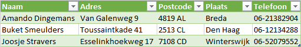
Met Power Query is dit goed uit te voeren. Download bestand stapeldata-1.xlsx en open deze.
Allereerst worden de gegevens omgezet naar een Excel tabel. Selecteer hiertoe in het werkblad de gegevens (A1:A18) en kies tab Gegevens > Van tabel/bereik. Selecteer de optie dat er kopteksten zijn en klik op OK.
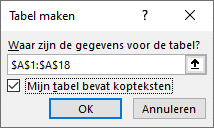
De Query Editor wordt nu opgestart.
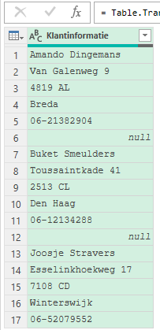
Verwijder allereerst de lege rijen, dit zijn de rijen met de waarde null. Kies tab Start > Rijen verwijderen > Lege rijen verwijderen.
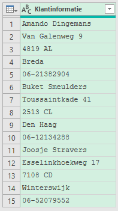
Nu moeten de velden en de records geidentificeerd worden. Dat gebeurt in een aantal stappen.
Allereerst wordt een indexkolom toegevoegd. De waarden in een indexkolom zijn positiewaarden: 0, 1, 2, 3, … Een dergelijke kolom wordt meestal gemaakt om andere transformaties te ondersteunen.
Voeg een indexkolom toe met tab Kolom toevoegen > Indexkolom > Vanaf 0.
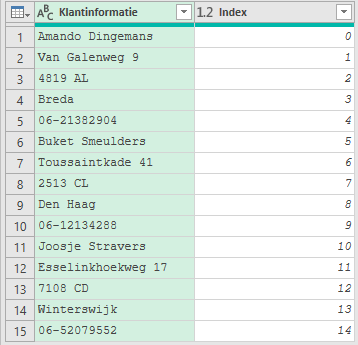
Vervolgens worden de velden die bij hetzelfde record horen geidentificeerd. Dat kan door de indexwaarde te delen door 5 (vanwege 5 velden) en van de uitkomst alleen het gehele getal te nemen.
Selecteer kolom Index en voeg een nieuwe kolom toe via tab Kolom toevoegen > Standaard (groep Van getal) > Delen (geheel getal). Het getal waardoor gedeeld moet worden is 5.
In de nieuwe kolom hebben alle velden van het eerste record de waarde 0, alle velden van het tweede record de waarde 1, enz.
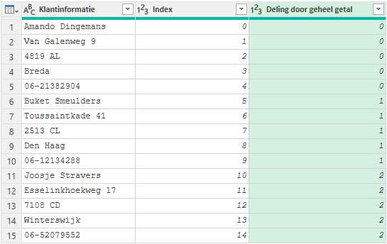
Nu moeten de gelijksoortige velden voor elk record een volgnummer krijgen. Dat kan door de indexwaarde te delen door modulo 5. Omdat je hierna de kolom Index niet meer nodig hebt kan de modulo deling direct op kolom Index worden toegepast.
De modulo is de restwaarde na een deling. Wanneer je bijvoorbeeld het getal 11 door 5 gaat delen, dan kan dat 2 keer en hou je een rest van 1 over. Ofwel 11 modulo 5 is 1.
Selecteer kolom Index en kies tab Transformeren > Standaard (groep Kolom getal) > Modulo. Het getal is weer 5.
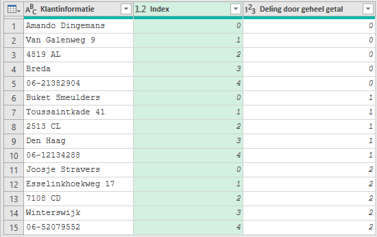
In de kolom Index hebben nu alle velden met de naam de waarde 0 gekregen, alle velden met het adres de waarde 1, enz.
Er zijn nu drie kolommen:
Klantinformatiebevat de waarden voor de uiteindelijke tabel.Indexbevat de kolompositie van de waarden.Deling door geheel getalbevat de rijpositie van de waarden.
Om de gewenste tabel te krijgen moet je de kolom Index draaien met behulp van de waarden uit Klantinformatie, waarbij deze waarden niet samengevoegd moeten worden.
Selecteer nu de laatste twee kolommen en kies tab Transformeren > Draaikolom.
Specificeer Klantinformatie als Waardenkolom. Kies bij Geavanceerde opties voor Niet samenvoegen.
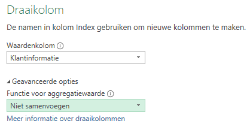
Klik op OK. Het resultaat is een tabel met zes kolommen:
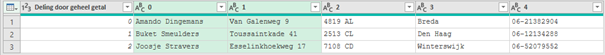
Als laatste moet de tabel nog wat opgeschoond worden. Verwijder de eerste kolom Deling door geheel getal en voorzie daarna de kolommen van zinvolle namen: Naam, Adres, Postcode, Plaats en Telefoon.
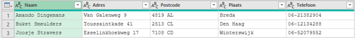
De gegevens kunnen nu naar het werkblad geladen worden via tab Start > Sluiten en laden.
Wanneer er later nieuwe gegevens aan de bron worden toegvoegd kies dan tab Gegevens > Alles vernieuwen.